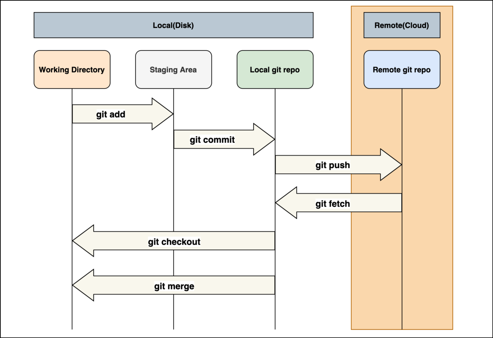

Github Commands
Configuring Git
- To login in git username :- git config --global user.name "username"
- To login in git email :- git config --global user.email "useremail"
- To see the username in git :- git config --global user.name
- To see the email in git :- git config --global user.email
Starting a repository
- To make git repository :- git init
- To see Status :- git status
Staging files
- To make a new file :- touch filename.extension
- To make changes :- After changes has been done use git add filename.extension or git add . for transferring all the files to staging area. This commnad is also used to add file into staging area and after that it will be commited.
- To commit :- git commit -m "message for commit"
Git Structure

Git Log Commands
- To see all the commits :- git log
- To rollback to previous commits :- git checkout *hashcode*
Git Checkout Commands
- To rollback to previous commit :- git checkout --filename
Pushing projects on Github
- Step 1:- First make a repository on Github.
- Step 2:- Copy the Link of the repository by clicking on Code(the green button with a dropdown.)
- Step 3:- Open Git Bash CMD and go to the folder with all the files.
- Step 4:- Initialize the folder as Git repository using git init
- Step 5:- Now stage all the files which is needs to be commited. (To stage all the files use git add .)
- Step 6:- Check the status using git status command.
- Step 7:- Commit the files which are staged using git commit -m "*Meaningful comments*" command.
- Step 8:- Type git remote add origin *Link which you copied in Step 2*.
- Step 9:- Then push the files using git push -u origin master. You will be asked for your username and password for Github
Pull Requests on Github